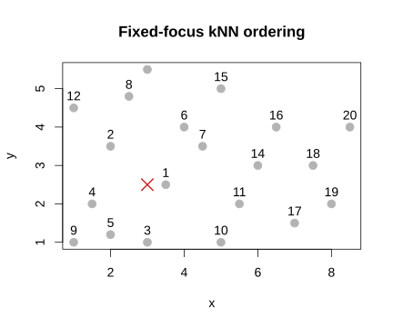
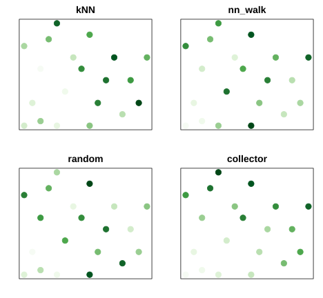
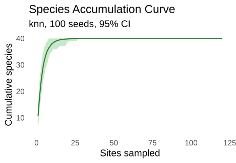
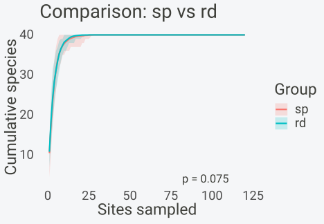
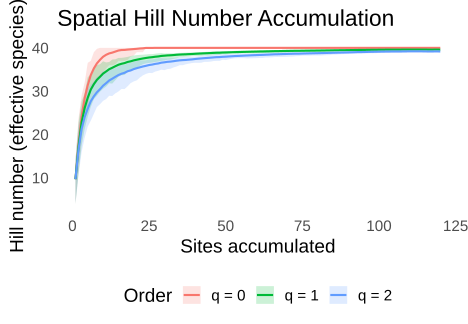

Installation
install.packages("spacc") # CRAN
install.packages("pak") # development version
pak::pak("gcol33/spacc")Overview
This vignette describes what spacc() computes and how. A
classical species accumulation curve draws sampling units in random
order; spacc draws them in spatial order, expanding outward
from a focal site so the curve reflects how richness grows with surveyed
area rather than with effort alone. The expansion rule is a
choice, and the package offers seven of them. Each rule defines an
ordering of the sites; the curve at step \(k\) is the number of distinct species seen
in the first \(k\) sites of that
ordering. Repeating the expansion from many starting sites turns the
spread of the curves into a confidence band.
The sections below define the vocabulary, state the accumulation
problem formally, derive each expansion method from its ordering rule,
give the distance metrics those rules depend on, map the mathematics
onto the function arguments, and explain the two-tier nearest-neighbour
backend that keeps the computation fast on large datasets. The applied
vignettes build on this foundation: see
vignette("quickstart") for the basic workflow,
vignette("diversity") for the Hill, beta, and coverage
extensions, and vignette("extrapolation") for fitting
asymptotic models to the curves.
Terminology
These terms recur throughout the package documentation.
Site. One sampling unit: a plot, quadrat, grid cell, or locality. Sites carry two coordinates and a row of species records.
Occurrence matrix. The input x: an
\(n \times m\) matrix of \(n\) sites by \(m\) species. Entries are presence-absence
(\(0/1\)) or abundance (counts). The
accumulation algorithms reduce abundance to presence-absence internally,
since a curve counts whether a species is new, not how many
individuals it has.
Coordinates. The input coords: an \(n \times 2\) table of positions, supplied
as a data frame with x and y columns, an
sf point layer, or a precomputed spacc_dist
object.
Ordering. A permutation \(\pi = (\pi_1, \dots, \pi_n)\) of the site indices that fixes the sequence in which sites enter the curve. Every expansion method is a rule for producing an ordering.
Accumulation curve. The vector \(S(1), \dots, S(n)\) where \(S(k)\) is the number of distinct species recorded across the first \(k\) sites of an ordering. The curve is non-decreasing and saturates at the total species count.
Focal point. A continuous coordinate \(c^*\) used by knn to rank all
sites.
Starting site. The first site \(\pi_1\) used by traversal methods.
Neighbourhood. The set of unvisited sites considered for the next step. For nearest-neighbour expansion it is all unvisited sites; for the cone method it is restricted to a directional wedge.
Focal-point band. The set of curves obtained from many focal points. Its pointwise quantiles form the confidence band.
Backend. The data structure used to answer nearest-neighbour queries: a precomputed distance matrix (exact) or a spatial index (k-d tree or ball tree).
Fixed-focus accumulation, concretely
Start with twenty sites and one focal point. The canonical k-nearest-neighbour ordering ranks every site by its distance from that same point.
pts <- data.frame(
x = c(1, 2, 1.5, 3, 3.5, 5, 5.5, 6, 2, 4,
7, 7.5, 8, 1, 6.5, 4.5, 2.5, 8.5, 5, 3),
y = c(1, 1.2, 2, 1, 2.5, 1, 2, 3, 3.5, 4,
1.5, 3, 2, 4.5, 4, 3.5, 4.8, 4, 5, 5.5)
)The ordering is a direct distance sort.
knn_order <- function(coords, focus) {
order(sqrt((coords$x - focus[1])^2 + (coords$y - focus[2])^2))
}
focus <- c(3, 2.5)
ord <- knn_order(pts, focus)The numbered sites expand outward from the focus.
plot(pts$x, pts$y, pch = 19, col = "grey70", cex = 1.4,
xlab = "x", ylab = "y", main = "Fixed-focus kNN ordering")
points(focus[1], focus[2], pch = 4, col = "#C62828", cex = 2, lwd = 2)
text(pts$x, pts$y, labels = match(seq_len(nrow(pts)), ord), pos = 3, cex = 1)
A different focal point gives a different ordering and curve.
spacc samples continuous focal points across the spatial
domain to represent that variation.
Problem formulation
Input. An occurrence matrix \(X \in \{0,1,2,\dots\}^{n \times m}\) for \(n\) sites and \(m\) species, and coordinates \(c_1, \dots, c_n \in \mathbb{R}^2\). Let \(\mathrm{sp}(i) = \{\, j : X_{ij} > 0 \,\}\) be the set of species present at site \(i\).
Ordering. A method produces a permutation \(\pi\) of \(\{1, \dots, n\}\). For the stochastic methods \(\pi\) is a random variable whose distribution depends on the seed and the rule.
Accumulation function. Given an ordering \(\pi\), the curve is
\[ S_\pi(k) \;=\; \left| \, \bigcup_{t=1}^{k} \mathrm{sp}(\pi_t) \, \right|, \qquad k = 1, \dots, n . \]
\(S_\pi\) is a step function: it rises by the count of species at \(\pi_k\) that were absent from the first \(k-1\) sites, and never falls. It reaches the total richness \(S_\pi(n) = |\bigcup_i \mathrm{sp}(i)|\) regardless of the ordering, so methods differ only in the shape of the approach, not the endpoint.
Focal-point band. Run the method from focal points
\(c^*_1, \dots, c^*_B\), giving curves
\(S^{(1)}, \dots, S^{(B)}\) stacked as
the \(B \times n\) matrix returned in
$curves. The summary at step \(k\) is the across-focus mean and the
empirical quantiles
\[ \bar S(k) = \frac{1}{B} \sum_{b=1}^{B} S^{(b)}(k), \qquad \hat q_\alpha(k) = \text{quantile}_\alpha\!\left( S^{(1)}(k), \dots, S^{(B)}(k) \right). \]
The \(2.5\%\) and \(97.5\%\) quantiles give the default band. The interval is not a parametric formula; it is the sampling distribution of richness-at-effort induced by varying the focal point.
Expansion methods
The seven rules include fixed-focus expansion (knn),
adaptive traversals (kncn, nn_walk,
gaussian), directional expansion (cone), and
geography-free baselines (random,
collector).
k-nearest neighbour (knn)
Sample a focal point \(c^*\) in continuous space and rank all sites by distance from that point:
\[ \pi \;=\; \operatorname{argsort}_j d(c^*, c_j). \]
This is the fixed-focus spatially constrained rarefaction ordering
described by Chiarucci et al. (2009). By default, focal points are
sampled uniformly over the convex hull of eligible sites. An
sf polygon supplied through focal_domain
represents a known irregular boundary, including holes and disconnected
parts. Exact coordinates supplied through focal_points
reproduce a specified design.
The Rarefy package (Thouverai et al. 2026) implements the same
traversal with the observed plots as foci:
Rarefy::directionalSAC() with the site distance matrix as
gradient ranks the sites by distance from each plot in turn and averages
the collector curves, which is
spacc(x, coords, method = "knn", focal_points = coords) (on
a 60-plot simulated community the two agree to machine precision). The
packages differ in where the foci come from: Rarefy seeds at the plots,
spacc by default at points drawn over the study area, so a plot-seeded
curve weights the region by where plots happen to be. Rarefy curves can
be brought into spacc with as_spacc().
Nearest-neighbour walk (nn_walk)
From the current site \(\pi_k\), move to the closest unvisited site:
\[ \pi_{k+1} \;=\; \arg\min_{j \,\notin\, \{\pi_1,\dots,\pi_k\}} d(\pi_k, j). \]
The current site changes at every step. The traversal can follow a chain through local clusters and cross a larger gap after a cluster is exhausted.
k-nearest centroid neighbour (kncn)
Track the centroid of the visited set and move to the unvisited site closest to it:
\[ \bar c_k = \frac{1}{k} \sum_{t=1}^{k} c_{\pi_t}, \qquad \pi_{k+1} = \arg\min_{j \,\notin\, \{\pi_1,\dots,\pi_k\}} \| c_j - \bar c_k \| . \]
Because the reference point is the centroid rather than the last site, the visited set grows as a compact footprint. Its reference point updates to the centroid of the selected sites at every step.
Gaussian-weighted walk (gaussian)
A probabilistic nearest-neighbour walk. From the current site, draw the next site at random with probability proportional to a Gaussian kernel of distance:
\[ \Pr(\pi_{k+1} = j) \;\propto\; \exp\!\left( -\frac{d(\pi_k, j)^2}{2\sigma^2} \right), \qquad j \notin \{\pi_1,\dots,\pi_k\}. \]
Nearby sites are favoured but not guaranteed, so the walk explores a
neighbourhood rather than always taking the single closest site. The
bandwidth \(\sigma\) sets how sharp the
preference is: small \(\sigma\)
approaches nn_walk, large \(\sigma\) approaches random. By
default \(\sigma\) is the median of the
non-zero pairwise distances.
Directional cone (cone)
Pick a random direction \(\theta\)
for the seed. Sites whose bearing from the seed falls within the
half-width cone_width of \(\theta\) are accumulated first, in order of
distance; the remaining sites follow afterwards, also by distance:
\[ \text{in-cone}(j) \iff \bigl| \angle(c_j - c_s) - \theta \bigr| \le \texttt{cone\_width}. \]
The cone models a survey that advances along a bearing, such as a transect up a valley or along a coastline. The default half-width is \(\pi/4\) (a 90-degree wedge).
Random order (random)
A uniform random permutation of the sites, independent of geography. This is the classical accumulation curve and the null model the spatial methods are measured against.
Collector (collector)
The sites in the order they appear in the data, with no randomisation. It produces a single curve and reproduces the “collector’s curve” of the order in which a survey was actually conducted.
Comparing the orderings
The same points, ordered by four rules, make the differences visible. Colour encodes visiting order from first (dark) to last (light).
pal <- function(o) grDevices::hcl.colors(length(o), "Greens", rev = TRUE)[order(o)]
nn_walk_order <- function(coords, seed) {
n <- nrow(coords); visited <- logical(n); result <- integer(n)
current <- seed; visited[current] <- TRUE; result[1] <- current
for (step in 2:n) {
distances <- sqrt((coords$x - coords$x[current])^2 +
(coords$y - coords$y[current])^2)
distances[visited] <- Inf
current <- which.min(distances)
visited[current] <- TRUE
result[step] <- current
}
result
}
orders <- list(
kNN = knn_order(pts, focus),
nn_walk = nn_walk_order(pts, 1),
random = sample(nrow(pts)),
collector = seq_len(nrow(pts))
)
op <- par(mfrow = c(2, 2), mar = c(2, 2, 2, 1))
for (nm in names(orders)) {
rank_k <- match(seq_len(nrow(pts)), orders[[nm]])
plot(pts$x, pts$y, pch = 19, cex = 1.6, col = pal(rank_k),
xlab = "", ylab = "", main = nm, axes = FALSE); box()
}
par(op)The knn panel expands around one point. The
nn_walk panel follows the current site recursively. The
random panel has no spatial pattern, and
collector follows the row order.
Distance metrics
The walks depend on a distance \(d(i,
j)\) between sites, set by the distance
argument.
Euclidean. For projected or arbitrary planar coordinates,
\[ d(i,j) = \sqrt{(x_i - x_j)^2 + (y_i - y_j)^2}. \]
Haversine. For geographic coordinates given as
longitude (x) and latitude (y) in degrees, the
great-circle distance in kilometres,
\[ d(i,j) = 2R \,\arcsin\!\sqrt{ \sin^2\!\tfrac{\Delta\varphi}{2} + \cos\varphi_i \cos\varphi_j \, \sin^2\!\tfrac{\Delta\lambda}{2} }, \]
with \(\varphi\) latitude, \(\lambda\) longitude, and \(R = 6371\) km. Haversine needs no projection step, so longitude-latitude data can be used directly.
Spatiotemporal. When sites are sampled across time,
supply a time vector and the distance becomes a weighted
sum of a spatial and a temporal term:
\[ d(i,j) = w_{\text{space}} \, d_{\text{space}}(i,j) + w_{\text{time}} \, |t_i - t_j|. \]
The weights w_space and w_time trade
geographic against temporal proximity. A composite distance is not a
metric a spatial tree can index, so this mode always uses the exact
backend and is available for the methods that accept a distance matrix
(nn_walk, gaussian).
From theory to implementation
The mathematical objects map onto arguments of spacc()
directly.
| Concept | Argument | Effect |
|---|---|---|
| Ordering rule | method |
Selects one of the seven expansion rules |
| Distance \(d\) | distance |
"euclidean" or "haversine"
|
| Number of focal points \(B\) | n_seeds |
Curves in the focal-point band |
| Focal definition |
focal_points, focal_domain
|
Exact foci or polygonal sampling domain for knn
|
| Bandwidth \(\sigma\) | sigma |
Gaussian kernel width (default: median distance) |
| Cone half-width | cone_width |
Angular wedge for cone (default \(\pi/4\)) |
| Temporal axis |
time, w_space, w_time
|
Switches to composite distance |
| Fixed ordering | order |
Supplies \(\pi\) directly,
bypassing method
|
| Species split | groups |
One curve per group, same site ordering |
| Spatial support |
support, include_halo
|
Focal domain restricted to core sites |
| Query backend | backend |
Nearest-neighbour engine for nn_walk and
kncn
|
A typical call states the rule, the metric, and the number of seeds:
coords <- data.frame(x = runif(120), y = runif(120))
species <- matrix(rbinom(120 * 40, 1, 0.25), nrow = 120)
sac <- spacc(species, coords, method = "knn", n_seeds = 100,
progress = FALSE, seed = 42)
sac
#> spacc: 120 sites, 40 species, 100 seeds (knn)Supplying order brings an externally computed ordering,
for example one from a sampling design or a different package, into the
same band-and-plot machinery. Each ordering is treated like a seed, so a
matrix of orderings yields a band.
ord_mat <- t(replicate(20, sample(nrow(species))))
sac_user <- spacc(species, coords, order = ord_mat, progress = FALSE)
sac_user$n_seeds
#> [1] 20The two-tier traversal backend
The nn_walk and kncn traversals repeatedly
issue nearest-neighbour queries. Two backends answer them, and
backend = "auto" chooses by site count. Fixed-focus
knn computes and sorts distances from each focal point
directly.
Exact. Precompute the full \(n \times n\) distance matrix once, then answer each query by scanning a row. The matrix costs \(O(n^2)\) memory and the scan costs \(O(n)\) per step, so a full walk is \(O(n^2)\). For up to a few hundred sites this is the fastest option and the matrix fits comfortably in memory.
Spatial tree. Build a spatial index and query it in
roughly \(O(\log n)\), avoiding the
quadratic matrix entirely. For Euclidean distances spacc
uses a k-d tree (via nanoflann); for haversine distances it uses a ball
tree, whose spherical-cap geometry suits great-circle distance. The
build is \(O(n \log n)\) and the walk
is about \(O(n \log n)\), which wins
decisively once \(n\) grows past a few
hundred.
| Backend | Distance | Memory | Per query | Selected when |
|---|---|---|---|---|
| Exact | any | \(O(n^2)\) | \(O(n)\) | \(n \le 500\) (auto) |
| k-d tree | Euclidean | \(O(n)\) | \(\approx O(\log n)\) | \(n > 500\) (auto) |
| Ball tree | Haversine | \(O(n)\) | \(\approx O(\log n)\) | \(n > 500\), haversine |
The auto rule switches to a tree above 500 sites. The
two backends compute the same ordering rule, so they agree on the curve
up to ties; only the speed differs.
e <- spacc(species, coords, method = "nn_walk", backend = "exact",
n_seeds = 30, progress = FALSE, seed = 7)
k <- spacc(species, coords, method = "nn_walk", backend = "kdtree",
n_seeds = 30, progress = FALSE, seed = 7)
c(exact_mean_end = mean(e$curves[, ncol(e$curves)]),
kdtree_mean_end = mean(k$curves[, ncol(k$curves)]))
#> exact_mean_end kdtree_mean_end
#> 40 40The gaussian and cone methods use
coordinates or a distance matrix directly. The spatiotemporal composite
uses the exact backend.
Focal points and uncertainty
A single spatial curve is one realisation. For knn,
spacc repeats the expansion from n_seeds
continuous focal points and reads the spread from the resulting band.
Each ordering is independent, so RcppParallel distributes them across
threads and the per-step quantiles are taken after all curves
finish.
plot(sac)
The band is widest early and narrows as the curves converge on the shared endpoint. Early focal locations can rank different local communities first. The curves converge as most sites enter each ordering. More focal points improve the Monte Carlo estimate of this spatial distribution.
b50 <- spacc(species, coords, n_seeds = 50, progress = FALSE, seed = 1)
b300 <- spacc(species, coords, n_seeds = 300, progress = FALSE, seed = 1)
mid <- round(ncol(b50$curves) / 4)
c(seeds_50 = diff(quantile(b50$curves[, mid], c(.025, .975))),
seeds_300 = diff(quantile(b300$curves[, mid], c(.025, .975))))
#> seeds_50.97.5% seeds_300.97.5%
#> 0 0Relationship to random-order curves
The classical accumulation curve in vegan::specaccum()
draws sites in random or collector order and averages over permutations.
spacc reproduces that curve with
method = "random" or method = "collector" and
adds the spatial methods on top, so the two can be read against each
other. The compare() function tests the gap between any two
curves by permutation, bootstrap, or area-under-curve.
sp <- spacc(species, coords, method = "knn", n_seeds = 100, progress = FALSE, seed = 3)
rd <- spacc(species, coords, method = "random", n_seeds = 100, progress = FALSE, seed = 3)
cmp <- compare(sp, rd)
plot(cmp)
When species are aggregated, the spatial curve lags the random curve:
neighbouring sites share species, so spreading outward discovers them
more slowly than mixing distant communities at every step. The size of
the gap is a measure of spatial turnover. A spatial curve that tracks
the random one signals a community with little spatial structure; a
curve that lags far behind signals strong distance decay in composition.
An existing vegan::specaccum() result can be imported with
as_spacc() to enter the same plotting and comparison
machinery.
From curves to other diversity measures
The expansion rule fixes an ordering. The downstream functions reuse that ordering and change the diversity quantity accumulated at each step.
-
spaccHill()accumulates Hill numbers of order \(q = 0, 1, 2\) (richness, the exponential of Shannon entropy, the inverse Simpson index), counting effective species instead of raw species. -
spaccBeta()accumulates beta diversity and partitions it into turnover and nestedness components. -
spaccCoverage()tracks sample coverage, so curves can be standardised to a common completeness rather than a common site count. -
spaccPhylo()andspaccFunc()accumulate phylogenetic and functional diversity along the same ordering.
hill <- spaccHill(species, coords, q = c(0, 1, 2), n_seeds = 50, progress = FALSE, seed = 9)
plot(hill)
Each of these has its own vignette; the point here is that they share
the accumulation core. Choosing a method and
distance configures the ordering once, and every diversity
measure inherits it.
Design notes
Why several expansion methods? Each rule represents
a sampling model. Fixed-focus knn represents spatially
constrained rarefaction, kncn represents centroid-based
compact expansion, nn_walk represents a nearest-neighbour
traversal, and cone represents directional
accumulation.
Why percentile bands instead of a parametric interval? The uncertainty in a spatial curve is dominated by where the survey starts, which has no closed-form distribution. Resampling the seed and reading off empirical quantiles measures that variability directly, without assuming the curve follows a particular family.
Why reduce abundance to presence-absence? A species accumulation curve counts first appearances. Whether a species has one individual or a thousand at a site does not change whether it is new to the running total, so the accumulation core works on presence-absence. Abundance-aware questions are answered by the Hill and coverage extensions, which keep the counts.
Why a hard backend switch at 500 sites? Below a few
hundred sites the quadratic distance matrix is both small and the
fastest option; above that the memory and the per-query scan grow faster
than a tree’s logarithmic lookup. The threshold is a default that
backend overrides when a particular dataset or benchmark
calls for it.
References
Arrhenius, O. (1921). Species and area. Journal of Ecology, 9, 95-99.
Scheiner, S. M. (2003). Six types of species-area curves. Global Ecology and Biogeography, 12, 441-447.
Chiarucci, A., Bacaro, G., Rocchini, D., Ricotta, C., Palmer, M. W., & Scheiner, S. M. (2009). Spatially constrained rarefaction: incorporating the autocorrelated structure of biological communities into sample-based rarefaction. Community Ecology, 10, 209-214.
Gotelli, N. J., & Colwell, R. K. (2001). Quantifying biodiversity: procedures and pitfalls in the measurement and comparison of species richness. Ecology Letters, 4, 379-391.
Colwell, R. K., Chao, A., Gotelli, N. J., Lin, S.-Y., Mao, C. X., Chazdon, R. L., & Longino, J. T. (2012). Models and estimators linking individual-based and sample-based rarefaction, extrapolation and comparison of assemblages. Journal of Plant Ecology, 5, 3-21.
Chao, A., Gotelli, N. J., Hsieh, T. C., Sander, E. L., Ma, K. H., Colwell, R. K., & Ellison, A. M. (2014). Rarefaction and extrapolation with Hill numbers: a framework for sampling and estimation in species diversity studies. Ecological Monographs, 84, 45-67. doi:10.1890/13-0133.1
Ugland, K. I., Gray, J. S., & Ellingsen, K. E. (2003). The species-accumulation curve and estimation of species richness. Journal of Animal Ecology, 72, 888-897. doi:10.1046/j.1365-2656.2003.00748.x
Nekola, J. C., & White, P. S. (1999). The distance decay of similarity in biogeography and ecology. Journal of Biogeography, 26, 867-878.
Shigesada, N., & Kawasaki, K. (1997). Biological Invasions: Theory and Practice. Oxford University Press.
Bentley, J. L. (1975). Multidimensional binary search trees used for associative searching. Communications of the ACM, 18, 509-517.
Omohundro, S. M. (1989). Five balltree construction algorithms. Technical Report 89-063, International Computer Science Institute, Berkeley.
Blanco, J. L., & Rai, P. K. (2014). nanoflann: a C++ header-only library for nearest neighbor (kNN) search with k-d trees. https://github.com/jlblancoc/nanoflann
See also
vignette("quickstart")– the basic workflow end to endvignette("diversity")– Hill numbers, beta diversity, coveragevignette("extrapolation")– asymptotic richness modelsvignette("spatial-analysis")– distance decay, endemism, zeta diversity
Session info
sessionInfo()
#> R version 4.6.1 (2026-06-24 ucrt)
#> Platform: x86_64-w64-mingw32/x64
#> Running under: Windows 11 x64 (build 26200)
#>
#> Matrix products: default
#> LAPACK version 3.12.1
#>
#> locale:
#> [1] LC_COLLATE=English_Austria.utf8 LC_CTYPE=English_Austria.utf8
#> [3] LC_MONETARY=English_Austria.utf8 LC_NUMERIC=C
#> [5] LC_TIME=English_Austria.utf8
#>
#> time zone: Europe/Vienna
#> tzcode source: internal
#>
#> attached base packages:
#> [1] stats graphics grDevices utils datasets methods base
#>
#> other attached packages:
#> [1] spacc_0.11.0
#>
#> loaded via a namespace (and not attached):
#> [1] gtable_0.3.6 jsonlite_2.0.0 dplyr_1.2.1 compiler_4.6.1
#> [5] tidyselect_1.2.1 Rcpp_1.1.2 parallel_4.6.1 jquerylib_0.1.4
#> [9] systemfonts_1.3.2 scales_1.4.0 textshaping_1.0.5 yaml_2.3.12
#> [13] fastmap_1.2.0 ggplot2_4.0.3 R6_2.6.1 labeling_0.4.3
#> [17] generics_0.1.4 knitr_1.52 htmlwidgets_1.6.4 tibble_3.3.1
#> [21] desc_1.4.3 svglite_2.2.2 bslib_0.12.0 pillar_1.11.1
#> [25] RColorBrewer_1.1-3 rlang_1.3.0 cachem_1.1.0 xfun_0.60
#> [29] fs_2.1.0 sass_0.4.10 S7_0.2.2 RcppParallel_6.2.1
#> [33] otel_0.2.0 cli_3.6.6 withr_3.0.3 pkgdown_2.2.1
#> [37] magrittr_2.0.5 digest_0.6.39 grid_4.6.1 lifecycle_1.0.5
#> [41] vctrs_0.7.3 evaluate_1.0.5 glue_1.8.1 farver_2.1.2
#> [45] rmarkdown_2.32 pkgconfig_2.0.3 tools_4.6.1 htmltools_0.5.9